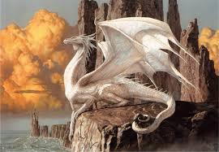
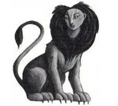

Department for the Regulation and Control of Magical Creatures
I work for the ministry of magic, a Magical Creature and Plant Reserve that serves all biomes across Britian. We help animals, train them, and breed them to save their species. When necesary, we find them the perfect forever-home and adopt them out.
Magiczoology
If you're here, you,re probably a muggle or my family/close friend. My name is Zoe. I'm a Magizoologist. I have made this site to mostly to warn muggles who come across these animals and think they're crazy. I specalize in dangerous magical animals and magical animals that can be pets with training. Though I'm mosty known for my knowledge of magical animal training.I am also very fond of regular animals and cross breeds between the two.

Annie and Missie are much cooler than both of them but my mother would disagree. My sister would, too.